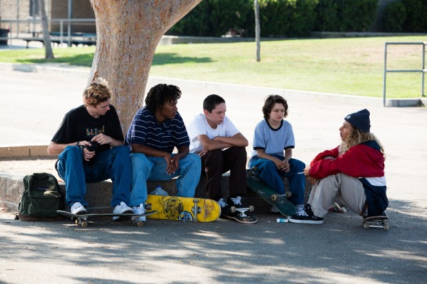

Jonah Hill Feldstein (20 de diciembre de 1983) es un actor, comediante y director estadounidense,
nominado en dos ocasiones al Premio Óscar. Ha trabajado en películas muy populares como Superbad, Moneyball
y El lobo de Wall Street.
SINOPSIS
Hay una clase de películas, las llamadas coming of age, en las que acudimos como espectadores a un proceso de madurez, crecimiento o aprendizaje de un protagonista que vive una época de cambios. En el caso de Mid90s (Jonah Hill, 2018), ese protagonista es Stevie, un chico de trece años que vive en un barrio obrero de Los Angeles a mediados de los años 90. Stevie tiene que lidiar en su día a día con una madre ausente y un hermano violento que abusa de él. Se interesa por el mundo del skate y
encuentra amparo en un grupo de skaters mayores que él, con los que comienza a salir.

Premios y nominaciones
2018: National Board of Review (NBR): Mejores películas independientes del año
2018: Critics Choice Awards: Nominada a Mejor intérprete revelación
2018: Premios Independent Spirit: Nominada a Mejor montaje